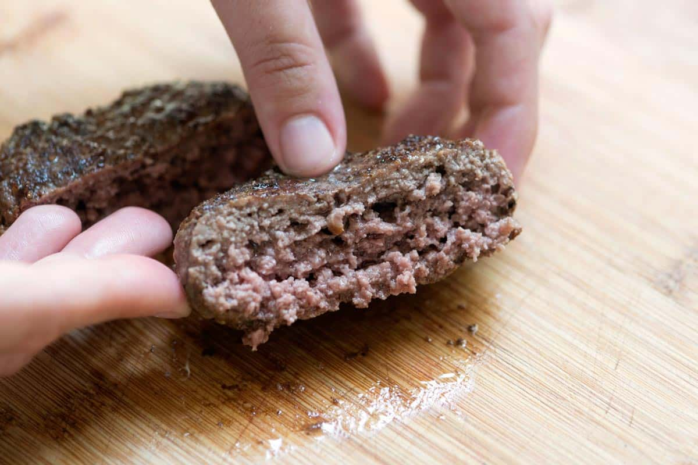

Homemade hamburger patties

Easy Course:
Homemade things are much tastier, genuine, and also cheaper.
If you want to prepare a fantastic burger, follow our recipe for homemade hamburger patties and feel the difference!
We have used high-quality ground beef with which you can create 3 delicious meat patty variants: classic, herb, and cheese.
Then it's up to you to add the rest! Cheddar, lettuce, and pickles for the classic American cheeseburger, or toma cheese, potatoes, and green sauce for a tasty Piedmontese version... and at this point, why not make the typical burger buns with your own hands?
And if beef burgers aren't enough, you can always prepare chicken hamburgers!
Unleash your imagination and tell us about your dream sandwich, obviously with a homemade beef hamburger!
Ingredients
For 2 classic patties
- Ground beef 0.8 lb (360 g) - freshly ground
- Fine salt to taste
- Black pepper to taste
For 2 herb patties
- Ground beef 0.8 lb (360 g) - freshly ground
- Thyme to taste
- Fine salt to taste
- Sage to taste
- Rosemary to taste
- Black pepper to taste
For 2 cheese patties
- Ground beef 11.6 lbs (330 g) - freshly ground
- Fine salt to taste
- Edam cheese 3.2 oz (90 g)
- Black pepper to taste
Steps
- First divide the ground beef into 3 bowls: 2 of 12.7 oz and one of 11.6 oz.
- Take a 12.7 oz bowl and add salt and pepper to taste, then mix with your hands.
- Place a 4 inch diameter pastry ring on a square of parchment paper, take a portion of meat weighing 6.3 oz and press it inside the pastry ring.
- Use a meat mallet to obtain an even thickness, then remove the pastry ring.
- Do the same with the remaining portion of the mixture to make 2 patties.
- Now chop the aromatic herbs with a knife and add them to the second bowl with 12.7 oz of meat.
- Salt, pepper and mix with your hands to obtain a uniform mixture.
- Form 2 patties, always assisting yourself with the pastry ring and the meat mallet.
- Lastly, grate the Edam with a coarse grater.
- Add the cheese to the bowl with 11.64 oz of meat, salt, pepper, and mix with your hands, then form the last 2 patties in the same way .
- Your homemade hamburger patties are ready to be cooked.